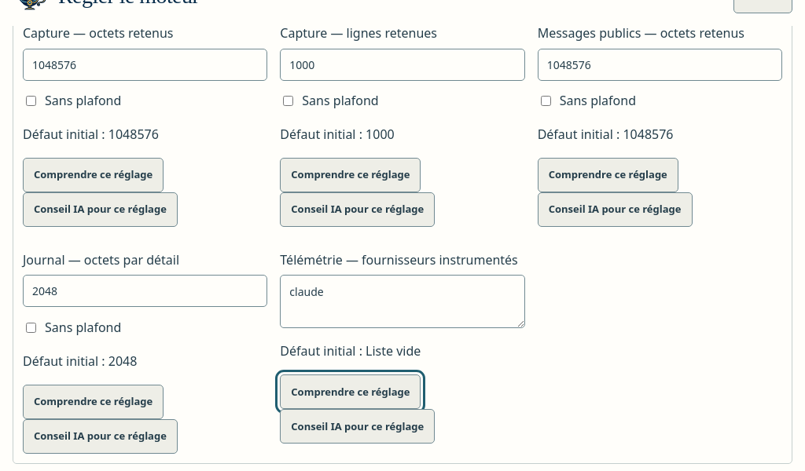

<section id="admin" data-transition="fade" style="background:#F6F4EE;color:#14213D;font-family:'IBM Plex Sans', Arial, sans-serif;padding:128px;display:grid;grid-template-columns:560px 1fr;gap:64px;align-items:center">
<div style="display:flex;flex-direction:column;gap:32px">
<h2 style="font-size:72px;font-weight:600;line-height:1.1">Un réglage Admin, désactivé par défaut</h2>
<p style="font-family:'JetBrains Mono', 'Courier New', monospace;font-size:24px;color:#2A78D6">agent_telemetry_providers · v30</p>
<ul style="font-size:32px;color:#4A5568;line-height:1.5">
<li>Liste vide = aucune télémétrie</li>
<li>Seul <b>claude</b> est accepté</li>
<li>Prévisualiser, enregistrer, historique</li>
</ul>
</div>
<div style="background:#E9E4D8;border-radius:16px;padding:24px;display:flex;justify-content:center">

</div>
<aside>Le catalogue n’a pas d’unité booléenne : la liste de fournisseurs remplace l’interrupteur prévu. Codex est refusé tant que son fichier de configuration par tentative n’existe pas.</aside>
</section>
